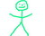

|
 | Lehet-e egy demokratikus
ország fõvárosában arra sétálni, amerre akarunk? Lehet-e letenni egy szál virágot az elsõ felelõs
miniszterelnök emlékmûvéhez, a demokrácia értékei melletti tüntetés gyanánt? Vagy ehhez is kell-e
külön engedély azoktól, akik kényük-kedvük szerint tologatják az országot, leginkább a katasztrófa
felé? A Magyar Önvédelmi Mozgalom ezeket a kérdéseket tette fel, és a válaszokat társadalmi kísérlet
keretében kívánták megtalálni. Szombaton, 17 órakor mindenki sétáljon véletlenül pont a
Batthyány-örökmécses felé, szólt a felhívás, és vigyen egy szál virágot.
1941-ben pontosan
ugyanilyen néma tüntetéssel tiltakoztak a kommunisták és a szociáldemokraták a háború ellen. Be nem
jelentett demonstrációjukat Ságvári Endre szervezte. A balosok mindmáig hatalmas hõstettként
ünneplik tettüket. Az állítólag fasiszta Horthy-rendõrség nem lépett közbe, bár az Egy óra múlva itt vagyok címû filmsorozatban ezt máshogy
ábrázolták. Most azonban a balosok vannak uralmon, ellenük tüntetni nem szabad, és természetesen még
sétálni sem, ha õk úgy gondolják. Azt ugyanis elõre be kell jelenteni.
Míg a Kossuth tértõl
az örökmécses közelébe jutottam, kétszer állítottak meg és kutattak át a rendõrök. Mindkétszer
barátságosak és korrektek voltak. Végül az örökmécsesnél úgy harminc-negyven tüntetõt és ugyanennyi
újságírót találtam. Csendes tüntetés helyett azonban hangosat találtam ott. Mindannyiunk kedvencei,
az Y-terves Fáber Károly, a taxisblokádot 1993-ra datáló nyilas Ekrem Kemál György, a különös
retorikai készségû Gonda László és mások jöttek, hogy heti elõállítás-adagjukat megkapják. Innentõl
bukta az egész, mert nem errõl volt szó, de hát a feltûnési viszketegség nagy úr. A szokásos
törzsvendégek között érdekes színfoltként tûnt fel egy kaftános, kalapos ortodox zsidó, aki szintén
egy szál virágot helyezett az emlékmûre, majd tétován beszélgetésbe elegyedett az állítólag
nagyon-nagyon antiszemita és gyûlöletkeltõ tüntetõkkel.

A zsidó
fiatalember...

...aki
virágot hozott Batthyány emlékmûvére.

A tüntetõk
örömmel és barátságosan fogadták, még a háta mögött sem mondtak rá semmi csúnyát

Egy idõsebb
törzstüntetõ azért megkérdezte, nem provokátor-e, biztos, ami biztos, de a fiatalember megnyugtatta, hogy nem
az

Gonda megint
beszélt, de minek?

Megjöttek a
rendõrök. Hatalmas apparátussal vonultak fel, és háromszor is felolvasták nekünk a fél Btk-t, majd megkezdték a tüntetés felszámolását. Zsidó barátunk
odament megnézni õket, de nem bántották.
 
A tüntetõk
élõláncot formáltak az örökmécses körül, és megtagadták a távozást

Elénekelték a
Himnuszt és a Székely Himnuszt
 
A rendõrök
körülvették õket, és mindenkit igazoltattak. A zsidó fiatalembert nem, õt csak megkérték, hogy
álljon arrébb.
 
Horthyék nem
csinálták ezt

A dacos
ellenállókat rabszállítókba terelték...

... a
többieket pedig kiszorították a térrõl, mert ha húsz méterrel arrébb állnak, az a közrend
szempontjából üdvösebb.
 
A sajtó
munkatársai közül többen is a kordon mögött maradtak. Egyiküket, az Index tudósítóját elõállították.
Hogy milyen alapon válogatták ki, hogy ki menjen, és ki maradhat, illetve kit kell elvinni, nem tudták megválaszolni.
Egyébként még mindig udvariasak és korrektek voltak, leszámítva az egész kiszorítósdi
jogtalanságát.

Ez a
fiatalember torka szakadtából ordított, valami európai normákat kérve számon

A
médiamunkások vidáman dolgoztak

Az európai
értékek jelképe

A térrõl
távoztunkban többen egy sörözõbe ültünk be, és bentrõl integettünk az elhaladó rohamrendõröknek,
akik barátságosan visszaintegettek. Közben a Szent Korona Rádió munkatársa megkóstolta a borsos
citromot. Nem finom.

A szomszéd
asztalnál busongó magyarok

A kiszorítás
után tíz perccel már vissza is lehetett térni a térre. 32 embert elvittek, köztük meglepetésünkre a zsidó fiatalembert is. Szemtanúk szerint egészen addig nem
is foglalkoztak vele, míg szóba nem elegyedett egy tüntetõvel. Akkor azonnal elfogták, de õ volt az
egyetlen, akit nem bilincseltek meg.
 
Tizenöt-húsz
ember visszament a térre, és békésen tüntetett tovább

Ki tudja,
miért, a rendõrök nem avatkoztak közbe. Talán addigra bejelentetté vált a tüntetés, vagy
mi...
Jó kis esti program volt. Örömmel jelentem, hogy Gabucinót is elõállították, jelenleg valószínûleg együtt üldögél a zsidóval, és remélhetõleg elkéri az elérhetõségét, hogy meginterjúvoljuk. Arra is kíváncsiak leszünk, vajon ellene is indul-e eljárás, vagy ez csak gójoknak jár ki.
| | vissza a fõoldalra |  |
| 1 2 3 4 5 6 7 8 9 | |  | | | | | | | | | | | | | | 

|
| | | | | | | | 1 2 3 4 5 6 7 8 9 |  |
|


túraszervezõ
túra-rss
mi ez?

legjobbak
legolvasottabbak
tartalomjegyzék
rss feed

AboryM
Caesar
Count Grishnackh
cscsabi
eürdüngh
Feki
GyalogKakukk
Ishukone
Kadzseszka
LACI1993
Mini
Muska
Rommel
Segi
Takezó
tommylee
vikcee
|
BlogGép 1.1 (C) 2007-2009 tomcat
nem adom
hülye kérdések elott olvasd el a faq-t
minden, a bombagyar.hu-n és aloldalain közölt tartalom újraközléséhez
a szerkesztõk írásos beleegyezése szükséges
az olvasói kommentárok és levelek nem feltétlenül a szerkesztõk véleményét tükrözik
házirend elolvasása